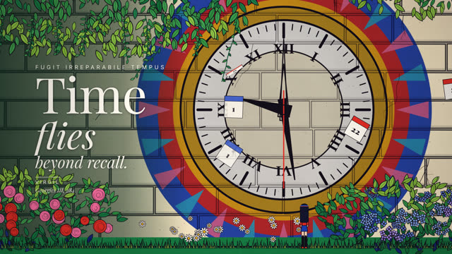
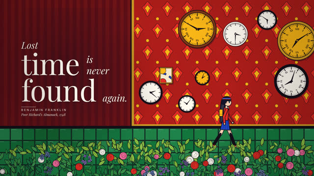
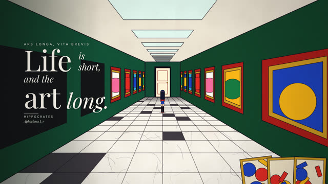
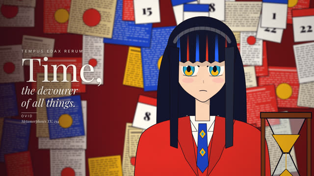
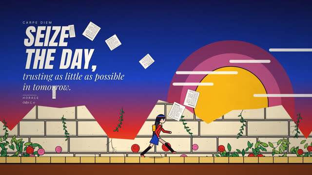
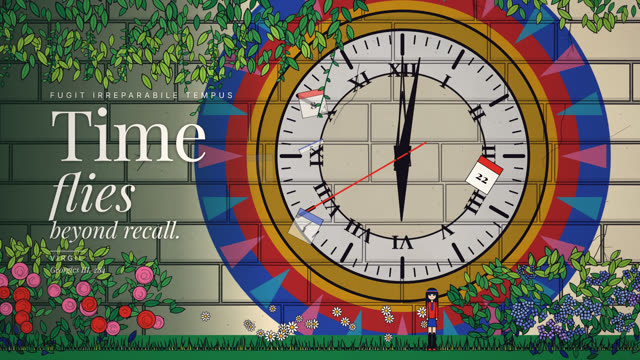

작업 흐름
- 입력
- 주제 하나(시간, 용기, 바다, 회사의 가치 …). 레퍼런스 영상이 있으면 그 스틸
- 브리프
- 영상 전체가 말하는 한 문장, 출처를 확인한 퍼블릭 도메인 명언 5–8개, 명언마다 새로 설계한 장면 · 소품 · 전환, 처음과 끝이 같은 반복 이미지를 적은
BRIEF.md - 캐스트
- 주제에 맞춰 디자인한 주인공(앞머리 · 색 브릿지 · 눈 · 옷 · 가방), 양쪽 방향 캐스트 시트와 관절 한계 검사
- 그림과 글자
- 평면 색 · 한 단계 셀 그림자 · 먹선 · 벽마다 패턴인 판, 왼쪽 3분의 1의 어두운 자리에 쌓는 흰 편집 타이포(역할 9가지, 등장 · 퇴장 애니메이션), 종이 · 균열 · 소용돌이 · 잉크 전환
- 확인
- 스틸 채점 기준(포스터 시험 · 글자 위계 · 명언과 장면 · 몸), 빈 프레임 · 결정성 · 관절 · 명언이 안전 영역 안에 있고 읽히는지(밑 그림의 밝기) · 악보 검사
- 출력
- 30fps 1920×1080 MP4(펠트 피아노 · 패드 · 종이 · 돌 · 잉크 소리 포함), ♪ 버튼으로 소리까지 재생하는 라이브 페이지, 엔진과 폰트째 넣은 HTML 한 파일(약 400 KB)
cd aphorism-film/examples/time
node ../../scripts/render.mjs index.html --sheet 24 --scale .5
node ../../scripts/check.mjs index.html
node ../../scripts/score.mjs score.js --dur 43.5 --out out/time.wav
node ../../scripts/render.mjs index.html --workers 4 --audio out/time.wav
node ../../scripts/bundle.mjs index.html
node ../../scripts/new-film.mjs ../../../my-film요구 사항: Node + Playwright Chromium, ffmpeg. 네트워크와 GPU가 필요 없습니다(CPU에서 1080p 한 프레임 약 0.11초, 43초 영상을 워커 4개로 약 3분). 단계별 순서는 SKILL.md에 있습니다.
샘플
예제 「Time」의 여섯 샷과 네 가지 전환, 시작 템플릿과 캐스트 시트입니다. 카드를 누르면 새 탭에서 그 순간에 멈춘 장면이 열리고, 브라우저가 패턴과 글자부터 직접 그립니다.
Time 16:9 · 43.5초 · 6샷
시간에 관한 다섯 문장(베르길리우스, 프랭클린, 히포크라테스, 오비디우스, 호라티우스)을 문장마다 새로 설계한 장면 위에 세우고, 정원 벽의 거대한 시계 벽화로 시작해 같은 벽화로 끝납니다. 원본 영상에 없는 주제입니다.






전환 장면을 잇는 네 가지 사건
전환은 이 화풍의 문장 부호입니다. 명언의 뜻에 맞춰 고르고, 전환 한가운데 멈춘 프레임도 그 자체로 볼 만한 그림이 되게 만듭니다.
출발점 새 영화를 시작하는 파일
new-film.mjs가 복사하는 12초 템플릿(플라톤이 인용한 속담, 베이컨)과, 장면을 쓰기 전에 검토하는 캐스트 시트입니다.
실제 작품
이 레포에서 만든 스킬입니다. 852話(hakoniwa)가 X에 올린 61초 영상 「I think, therefore I am」(데카르트 · 소크라테스 · 니체 · 사르트르 같은 서양 철학 명언을 편집 타이포로 얹은 애니메이션 일러스트 영상)이 출발점입니다. 그 영상은 AI를 도구로 쓴 일러스트를 움직여 엮은 것입니다. 이 스킬은 그 화풍(글자 쌓기, 패턴 가득한 평면 그림, 큰 공간 속 작은 인물, 사건이 되는 전환, 처음으로 돌아오는 반복)만 가져오고, 모든 그림을 직접 만든 캔버스 엔진이 코드로 그립니다. 예제 「Time」의 문장 선택과 장면, 주인공, 음악은 모두 이 레포의 것입니다.
링크
- SKILL.md 워크플로
- 폴더 lib · scripts · templates · references · examples
- README.md 빠른 시작
- references/SOURCE.md 레퍼런스 영상의 샷 구성, 가져온 것과 가져오지 않은 것
- references/BRIEF.md 주제를 브리프로 바꾸는 틀, 스틸 채점 기준
- references/QUOTES.md 명언 고르기 · 출처 확인 · 잘못 알려진 인용 · 글자로 세우기, 한글 폰트 넣기
- references/STYLE.md 팔레트, 그림의 문법, 레이어와 카메라, 전환을 고르는 법, 색감
- references/TYPE.md 명언 쌓기 문법, 역할 9가지, 구성 규칙
- references/CAST.md 주인공 디자인, 방향과 관절 규칙, 캐스트 시트
- references/KIT.md 엔진 · 그림 도구 · 인물 · 글자 · 악보 API
- references/LESSONS.md 겪은 문제와 해결